弓弦轻颤，穿透苍穹，九曲源头，草原秘境。哒哒的马蹄声，送来一个个蒙古好男儿，他们将为争夺蒙古族的至高荣誉“巴特尔”掀起一场风云对决。
金秋十月，国庆佳节。中央电视台无锡影视基地精心打造的饕餮大餐——第六届“叼羊盛会”将带领游客们走入草原秘境，体验精彩的蒙古族风情。
美丽的草原少女，善战的蒙古勇士；欢腾的草原歌舞，激情的蒙古摔跤……彩色巨幅哈达筑起神圣英雄圈，昭示草原雄风、见证勇士披靡。当然绝对不可错过的要数最后的压轴大戏——叼羊大赛，十二位草原勇士将呈现马背上的速度与激情，马上倒立、立马、跳马、拖马、镫里藏身、砍火桩、飞身马上抄哈达……，各种绝活让人目不暇接，拍案叫绝。更有惊险刺激的马上较量让你屏住呼吸，惊心动魄的争夺让你见证一场只属于勇敢者的游戏。
9月28日至10月7日期间，每天下午2点在水浒城演艺广场，“叼羊盛会”邀您一同见证草原英雄的荣誉之战！
无锡影视基地始建于1987年，占地面积近100公顷，可使用太湖水面200公顷。 当年中央电视台按照"以戏带建"的方针，为拍摄电视连续剧《唐明皇》、《三国演义》 和《水浒传》，相继建成了唐城、三国城和水浒城三大景区。
无锡影视基地拥有大规模的古典建筑群体，三国城内的建筑雄浑刚劲；水浒城内 的建筑工巧华丽；唐城内的建筑金碧辉煌。另外还有"老北京四合院"、"老上海一条街" 等明清风格的建筑景观。
丰富多彩的演出节目是无锡影视基地的旅游亮点，这里每天有10多场马战、歌舞、 影视特技类的节目连续上演。
作为中国著名的影视拍摄基地，这里已经接待了250多部海内外影视剧的拍摄。
【景区官网】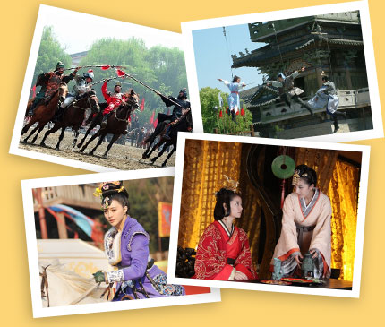
“无锡火车站(南广场)”下车的游客：
可以到“东广场公交站”乘坐公交82路即可到达。
“无锡中央车站”下车的游客：
可以到“公交站A岛”乘坐1路、11路、203路，或者“公交B岛”乘坐30路、77路到“火车站(东)”下车，转乘82路即可到达。
“无锡汽车客运站”下车的游客：
可以到“公交C岛”乘坐60路、712路到“火车站(东)”下车，转乘82路即可到达。
百度地图示意
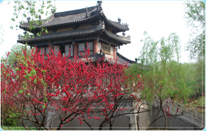
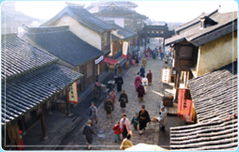
团队：<无锡双城1天>三国城+水浒城
45人成团天天出发
★中视股份继唐城景区之后推出的又一座集影视拍摄旅游功能
于一体的影视城
★国内公认的最早最成功的影视基地，被誉为东方好莱坞
45人成团价 ￥99元/人
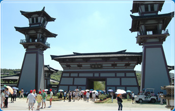
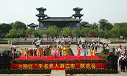
“千名老人下江南”联欢活动
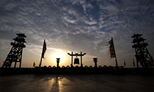
曹船
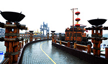
吴营码头游步道
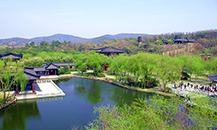
后宫水榭
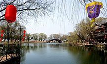
虹桥
三国城——古船游太湖
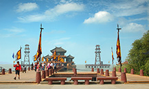
三国城景点——曹营水寨
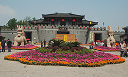
三国城景点——城门
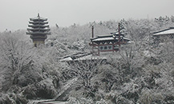
三国城景点——甘露寺
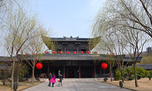
三国城景点——后宫
三国城景点——聚贤堂
三国城景点——水榭
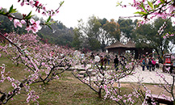
三国城景点——桃园
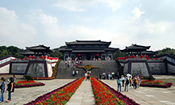
三国城景点——吴王宫
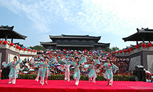
三国城景点——吴王宫活动
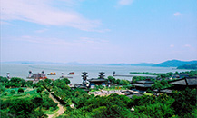
三国城景点——吴王宫全景
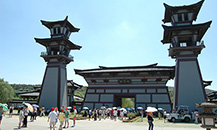
三国城景点——吴王宫阙楼
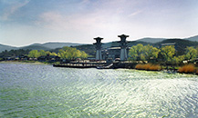
三国城景点——吴王宫水景
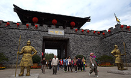
三国城门
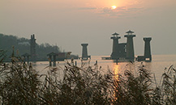
三国城晚霞
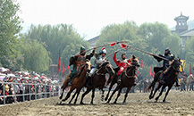
三国城演出——《三英战吕布》
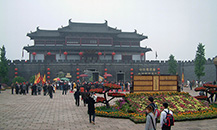
水浒城广场
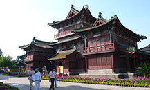
水浒城景点——樊楼
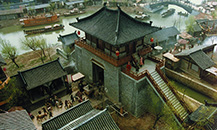
水浒城景点——清明上河街
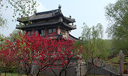
水浒城景点——浔阳楼
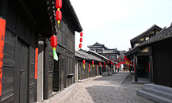
水浒城景点——郓城街
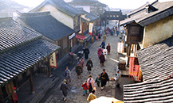
水浒城景点——紫石街
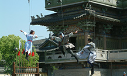
水浒城演出——《铁血丹心》
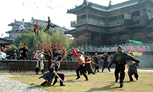
水浒城演出——《铁血丹心》
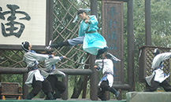
水浒城演出——《燕青打擂》
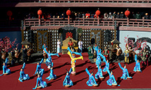
铜雀朝歌
吴营水寨
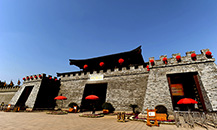
三国城城门
自组团
三三设计、三三收客、三三导游上门接送
往返机场上门接送直营门店
直营门店值得信赖方便快捷
门店遍布苏州县市维护权益
关注客户心声